Menu with the three options (http://localhost:8090)
Web application in PHP with MySQL/MariaDB, an initial menu, no sessions and no login on purpose (so no access control).
Repository with the full source code and the instructions: https://github.com/tak0dan/cars-crud-php-mysql
| # | Requirement | Where / how it is done |
|---|---|---|
| 1 | Add new cars from an HTML form with brand, model and picture. The table has an auto-incremented id. | alta.php: form (brand, model, picture as file upload or as url). Saves with a prepared INSERT; the id is AUTO_INCREMENT. |
| 2 | Search cars by brand or model from an HTML form. | buscar.php: GET form, prepared SELECT ... WHERE marca LIKE ? OR modelo LIKE ?. Every result row has an Edit link. |
| 3 | Edit the cars found. The edit form shows the picture of that car and allows changing the data or deleting the car. | editar.php: shows the picture, UPDATE on save, DELETE on the delete button (asks for confirmation with JavaScript). |
| 4 | admin_crearbasedatosytablas.php creates the database (coches) and the table (coches) and 2 example cars with pictures (urls from the internet), visible in the edit page. | admin_crearbasedatosytablas.php: CREATE DATABASE IF NOT EXISTS, CREATE TABLE IF NOT EXISTS and two inserts (Toyota Corolla Cross, Ford Mustang) only when the table is empty, so it is safe to run twice. |
Other files: index.php (menu), config.php (connection data and helpers used by every page), style.css (colours only, see section 5).
Technologies: PHP (PDO), MySQL/MariaDB, HTML, CSS and a little JavaScript.
Needs PHP 8 with pdo_mysql and any MySQL/MariaDB server.
mariadb-install-db --no-defaults --datadir=/tmp/carsdb mariadbd --no-defaults --datadir=/tmp/carsdb --port=3307 --bind-address=127.0.0.1 --socket=/tmp/carsdb.sock & cd cars-crud-php-mysql DB_HOST=127.0.0.1 DB_PORT=3307 php -d extension=pdo_mysql -S localhost:8090 # open http://localhost:8090/admin_crearbasedatosytablas.php once, then http://localhost:8090/
The connection can be changed with the env variables DB_HOST, DB_PORT, DB_USER, DB_PASS, or at the top of config.php.

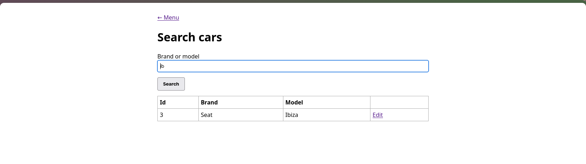
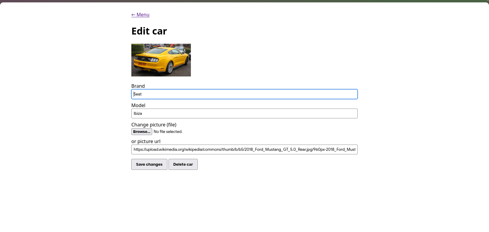
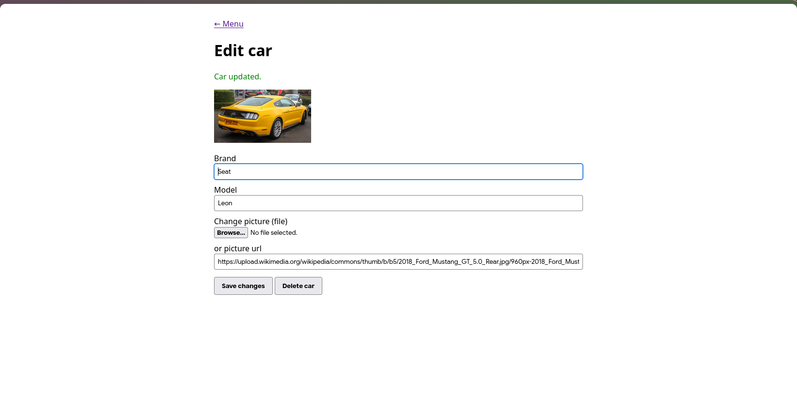

manager-linux-x64.run, it installs into /opt/lampp).coches: C:\xampp\htdocs\coches (Windows) or /opt/lampp/htdocs/coches (Linux; the fotos folder must be writable).http://localhost/coches/admin_crearbasedatosytablas.php once.http://localhost/coches/. Nothing has to be configured: XAMPP's defaults (user root, no password) are what config.php expects.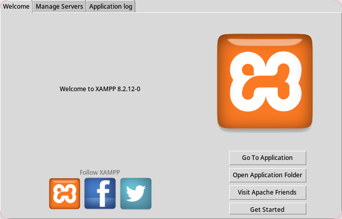

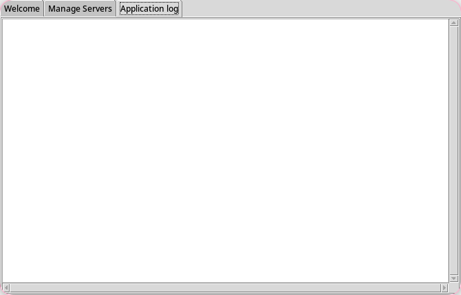
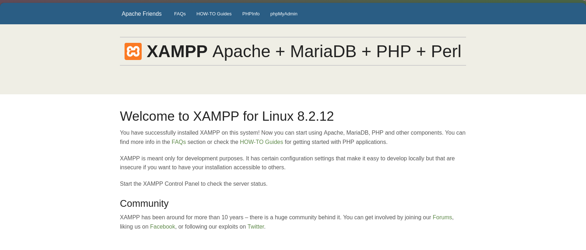
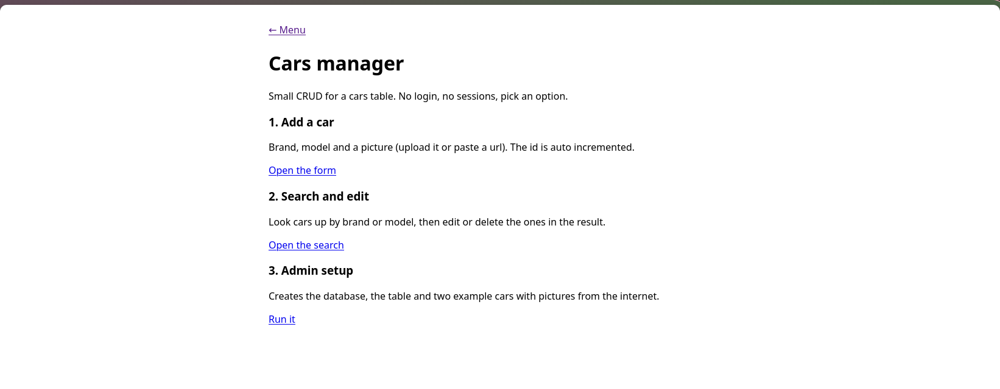

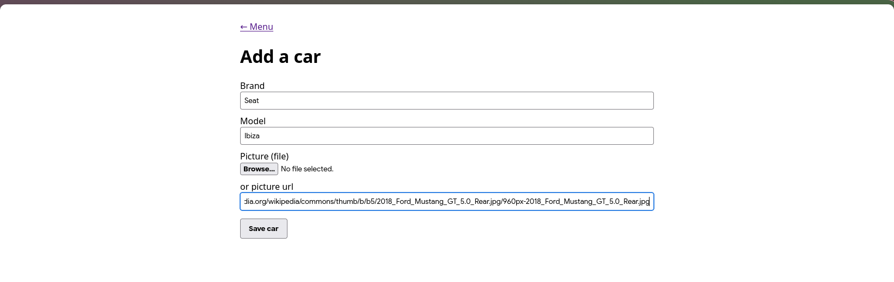


coches in XAMPP's MySQLAfter the plain technical tests, style.css gives the pages the colours below. It is the same code and the same instructions as in sections 2 and 3, only the look changes (?plain=1 on any page switches back to the unstyled look, ?plain=0 to the coloured one).

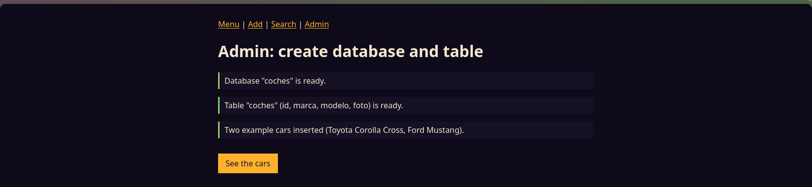
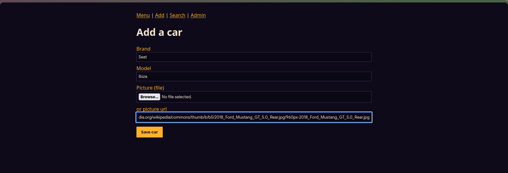
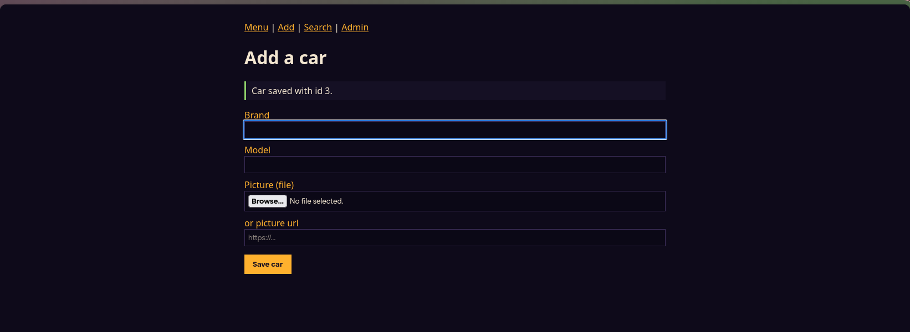

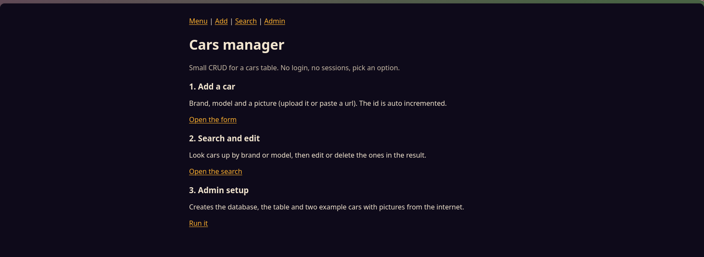
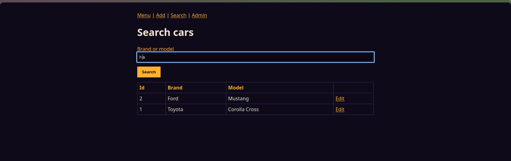
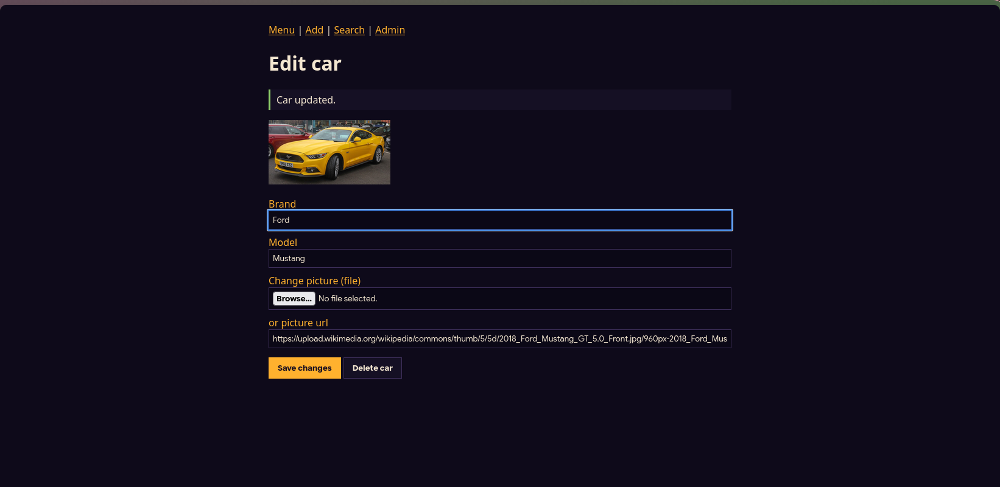
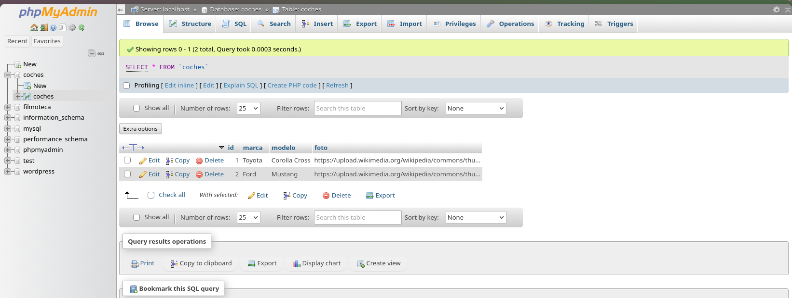
I first used the look of my SunshineOS site (https://tak0dan.github.io/sunshineos-site/) because an empty HTML page looks ugly. That was too much for this exercise, so the final style.css keeps only the colours of that site (dark indigo background #0e0a1a, warm text #f3e6d0, gold #ffb12e for links and buttons, border #3d2f5a) on top of very primitive styling: no layout, no custom fonts, no navigation bar. These are the pages the colours come from:
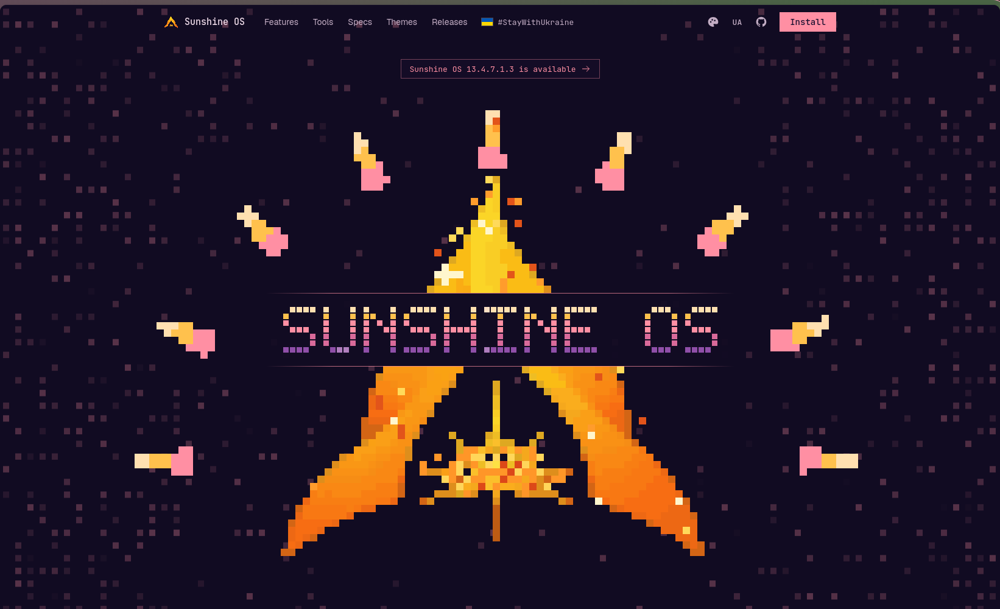

Source code and a README with the instructions for both ways of running it (with and without XAMPP):
https://github.com/tak0dan/cars-crud-php-mysql